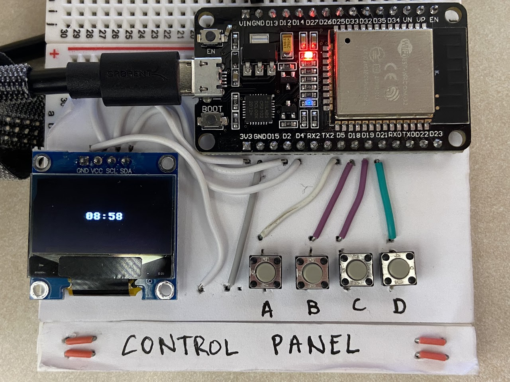

Microwave Control Panel

In the first semester of my freshman year at Tufts I took an intro to engineering class called Engineering in the Kitchen which combined topics from computer science, mechanical engineering, and electrical engineering. One of the projects was to design and build a microwave control panel with three requirements:
1. The user of the control panel must be able to specify different amounts of time for the microwave to cook
2. The control panel must indicate how much time is remaining while it is operating
3. The microwave must turn off if the microwave door is opened during operation
I worked with a partner to build and program a control panel meeting these specifications. The control panel uses an ESP32 as its microcontroller and the program is written in MicroPython.
The code for the project can be found here: https://drive.google.com/file/d/1NlN-fUJeuzWo3tbYMrS84rW-i6j8v06K/view?usp=sharing.
To see the Microwave Control Panel in action please check out the video below: